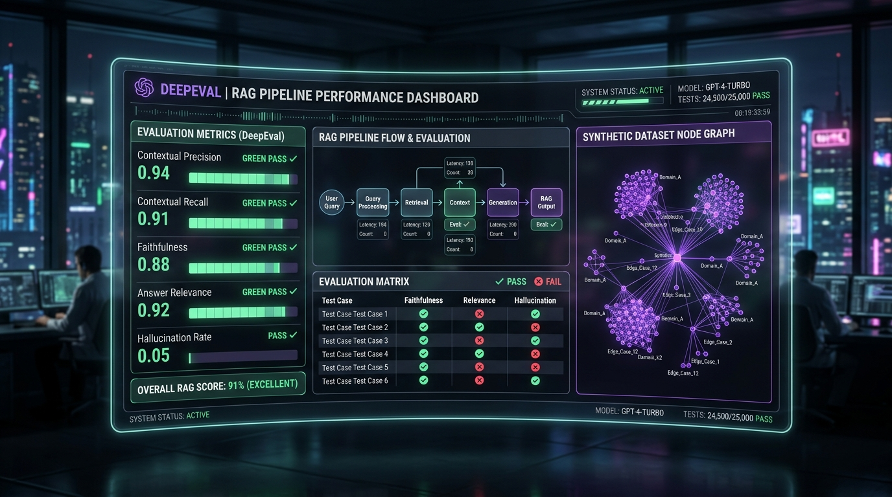

Complete testing methodology for enterprise Chatbots, RAG Pipelines, Autonomous AI Agents, and Model Context Protocol (MCP) Servers. Implement continuous evaluation pipelines that catch hallucinations, prompt injections, and regression bugs in CI/CD.

Overcoming the fundamental shift from deterministic software testing (assert x == y) to probabilistic AI evaluation (LLM-as-a-Judge & mathematical similarity scoring).
Testing both retrieval and generation stages of RAG architectures to isolate retriever hallucinations from model hallucinations.
Auditing autonomous agentic decision graphs, multi-turn dialogue, tool parameter extraction, and step-by-step reasoning trajectories.
Rigorous protocol compliance testing for custom MCP servers, Stdio/SSE transport streams, and connected tool interfaces.
Preventing AI regressions by embedding DeepEval assertions directly inside PyTest automation suites and GitHub Actions CI pipelines.
assert_test() hooks
import pytest
from deepeval import assert_test
from deepeval.metrics import FaithfulnessMetric, AnswerRelevancyMetric
from deepeval.test_case import LLMTestCase
def test_rag_pipeline_accuracy():
retrieved_context = ["Gene Da Rocha is an AI Systems Engineer specializing in DeepEval testing and RAG pipelines."]
actual_output = "Gene Da Rocha is an AI Systems Engineer who builds RAG evaluation suites."
test_case = LLMTestCase(
input="What does Gene Da Rocha specialize in?",
actual_output=actual_output,
retrieval_context=retrieved_context
)
faithfulness = FaithfulnessMetric(threshold=0.85)
relevancy = AnswerRelevancyMetric(threshold=0.85)
assert_test(test_case, [faithfulness, relevancy])